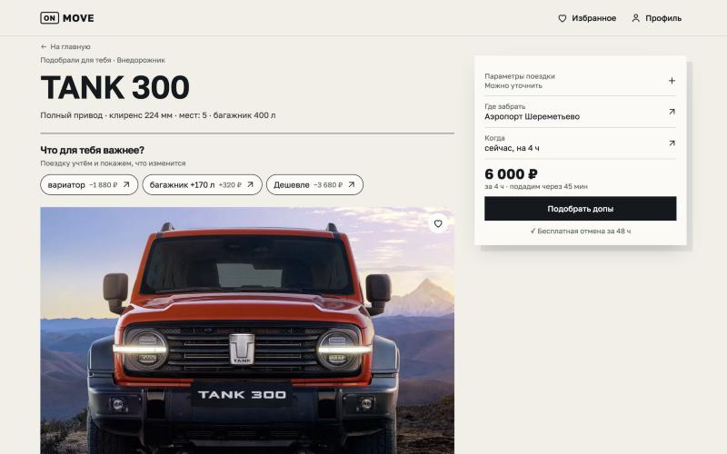

<title>ON MOVE шрифты</title>
<meta name="claude:viewport-fit-sides" content="cover">
<style>
  /* Лента скриншотов экрана подбора, по одному варианту шрифта */
  :root { --bg: #e9e7e1; --fg: #1d1917; --muted: #5d5853; --line: #1d191726; }
  @media (prefers-color-scheme: dark) { :root:not([data-theme="light"]) { --bg: #171514; --fg: #ece9e3; --muted: #a39d96; --line: #ece9e326; color-scheme: dark } }
  :root[data-theme="dark"] { --bg: #171514; --fg: #ece9e3; --muted: #a39d96; --line: #ece9e326; color-scheme: dark }
  body { background: var(--bg); color: var(--fg); font: 16px/1.45 -apple-system, system-ui, sans-serif;
    padding-left: max(16px, env(safe-area-inset-left, 0px)); padding-right: max(16px, env(safe-area-inset-right, 0px)); padding-block: 24px 48px; }
  main { max-width: 1100px; margin: 0 auto; display: grid; gap: 40px; }
  h1 { font-size: 22px; margin: 0; text-wrap: balance; }
  p { margin: 4px 0 0; color: var(--muted); }
  figure { margin: 0; display: grid; gap: 10px; }
  figcaption { display: grid; gap: 2px; }
  figcaption b { font-size: 18px; }
  img { width: 100%; height: auto; border: 1px solid var(--line); border-radius: 6px; display: block; }
</style>
<main>
  <header>
    <h1>Шрифт на экране подбора</h1>
    <p>Живой экран, шрифты подменены через CSS. Антиква в названии машины и подзаголовках, всё остальное набрано Golos.</p>
  </header>
  <figure><figcaption><b>B · Literata + Golos</b><span>Рекомендация: шире и мягче, название звучит как обложка журнала.</span></figcaption></figure>
  <figure><figcaption><b>A · Source Serif 4 + Golos</b><span>Строже и классичнее.</span></figcaption></figure>
  <figure><figcaption><b>C · Spectral + Golos</b><span>Шрифт, похоже, не успел подгрузиться: почти не отличается от A.</span></figcaption></figure>
  <figure><figcaption><b>D · Golos на всё</b><span>Самый интерфейсный и цельный вариант.</span></figcaption></figure>
</main>
